StackEval
Beyond Metrics: Designing a Structured LLM Evaluation Tool
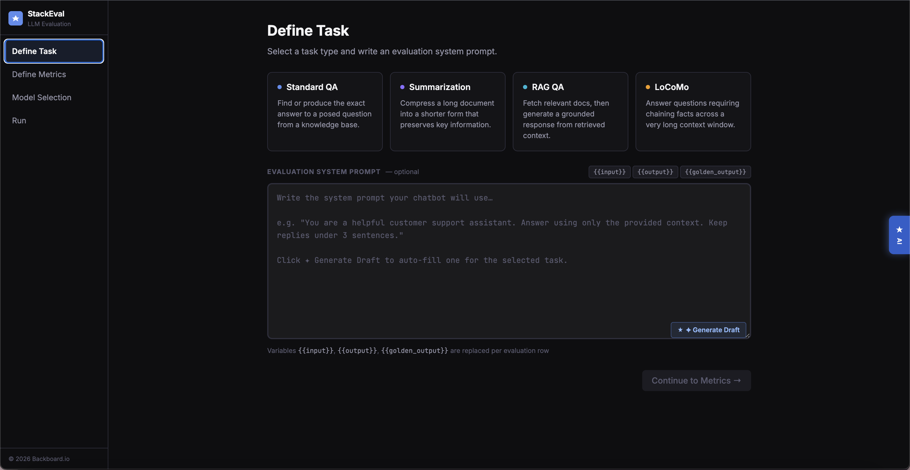
Developers don't evaluate LLMs with spreadsheets. They use intuition, experience, and task-specific reasoning, none of which existing tools support.
StackEval is a decision-support platform built for Backboard.io — an AI infrastructure company — that transforms informal, "vibes-based" model evaluation into a structured, repeatable workflow. Over a semester-long capstone, our team of five UX researchers and designers conducted 5 semi-structured interviews, preference testing with 28 participants, and moderated usability testing with 6 practitioners to understand how AI teams actually choose models in production.
The result: a four-phase evaluation workflow — Define Task, Define Metrics, Model Selection, and Run Evaluation — that reduces cognitive load at every step while preserving the flexibility expert users demand.
Design an evaluation dashboard that makes comparing LLMs faster, more rigorous, and more accessible to both technical and non-technical stakeholders.
Design a structured, repeatable evaluation workflow.
Build a decision-support environment that supports repeatable comparison, interpretable trade-offs, and calibrated trust within real development workflows.
Ground the design in real practitioner workflows.
Research two core personas, a senior developer and a founding engineer, to surface deep, actionable insights rather than surface-level usability fixes.
Bridge expert intuition and systematic evaluation.
Translate how developers actually evaluate models under real constraints into concrete UX and product recommendations for StackEval.
Exploratory Research
Before shaping any design direction, we examined how LLM evaluation works in practice, where StackEval fell short, and how practitioners reason about model choices under real constraints.
Desk Research
- Literature review across academic and industry sources on LLM evaluation
- Competitive analysis of LangSmith, LangChain, and benchmark frameworks to identify differentiation opportunities
- Exploratory calls with the Backboard.io team to understand product priorities and platform constraints
Heuristic Evaluation
- Evaluated the existing StackEval platform against Nielsen's 10 usability heuristics
- Each team member conducted an independent pass before consolidating findings
- Surfaced two high-friction areas: the output comparison view and the evaluation history view
Screener Survey
- Filtered for participants who had systematically compared multiple models and defined reference outputs
- Assessed evaluation approach (structured vs. intuition-based) and priorities (cost, tokens, output quality)
- Selected five participants with the depth of hands-on experience we needed
User Interviews
Five semi-structured interviews with practitioners who actively use LLMs in professional settings, designed to surface goals, decision-making processes, pain points, and the informal evaluation frameworks developers rely on in practice.
Protocol & Analysis
Each interview lasted ~45 minutes, conducted remotely with recording and notetaker support. We covered five areas: background and AI usage, a recent model evaluation walkthrough, the role of cost and latency, golden output usage, and how memory and context factor into model selection.
After each interview, team members independently extracted single-insight observations onto a shared Miro board, then conducted collaborative affinity mapping. Clusters were split, merged, and renamed until each grouping was tied to direct evidence from multiple participants.
Recruitment & Screening
Participants were recruited through professional networks using a screener that filtered for hands-on experience systematically comparing multiple LLMs. We selected five practitioners spanning software engineering, ML research, and founding roles across different organizational contexts and relationships to model evaluation.
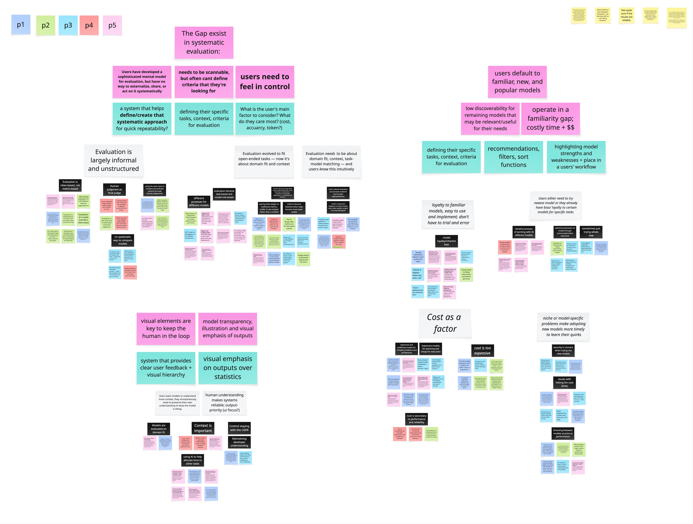
Affinity mapping across five participant interviews
User Interview Findings
Three core themes emerged from affinity mapping across five practitioner interviews.
Developers have built a real evaluation system, but it lives entirely in their heads.
Across every interview, participants demonstrated sophisticated evaluation instincts, yet almost none of it was written down, shared, or repeatable. Traditional metrics — BLEU, ROUGE, and F1 — were consistently dismissed as artifacts of a previous era, when model tasks were narrow and outputs could be compared to a correct label. Once work becomes generative, there is no single correct string to measure against.
Golden outputs carried the same problem. In real development, codebases evolve, requirements shift, and what counts as good depends on context. What replaced both was a task-based mental model, where participants matched specific models to specific jobs based on accumulated experience. The consequence: this knowledge does not accumulate. When a developer leaves a team or a model updates, the mental model disappears with them.
"Each model gives off its own style or feel. Through a five or six hour work session, I can really tell the difference."
P5 · CTO"Performance evaluation was very vibes-based but at a high level of understanding the trade-offs."
P2 · ML Researcher"We don't have a way — everything is so customizable you don't know if the system sucks or if the person's input sucks."
P3 · ML Engineer"Model evaluation has honestly become trial and error rather than automated benchmarking."
P4 · Founding EngineerA model's output is only as good as its ability to demonstrate contextual match.
Models are judged not only on the quality of their output but on whether they work in the correct context — whether they understand the codebase, follow the user's reasoning style, and iterate without getting stuck. A model that produces logically correct answers but misinterprets context is a worse fit than one that is slightly less verbose but maintains and works from the correct information.
Trust in evaluation depended more on how a model behaves throughout the process than on final scores. Developers care about transparency into the model's reasoning and contextual indicators — that is what builds confidence in what the model produces.
"Claude Code had fantastic domain knowledge on the actual codebase because it's directly integrated and it has all the docs."
P5 · CTO"If you end up losing track of the code, you can end up with a codebase you don't understand."
P3 · ML Engineer"Accuracy and minimizing hallucinations are the primary criteria for model selection."
P4 · Founding Engineer"Claude tends to follow instructions and doesn't get stuck."
P2 · ML ResearcherDefaulting to familiar models limits exposure to better alternatives.
Model selection is driven by brand loyalty and community consensus, not systematic comparison. Developers build detailed mental models of trade-offs, but only within a small set of models they already know. The cost of evaluating something unfamiliar — in time, money, and cognitive load — makes sticking with what's trusted the rational default.
With over 17,000 models in Backboard.io's catalog, this default is expensive. Better-fit models never get considered, and the same handful of providers get chosen repeatedly regardless of whether they're the best match for the task. Participants described quickly trying new models when they launched, but true comparative evaluation was rare.
"For now most of our time is spent building features rather than evaluating which model to use in the backend of each feature."
P1 · Software Engineer"It's largely trial and error."
P4 · Founding Engineer"I tend to use expensive models for the planning features. If there is a very good plan, it can be handled by most models."
P1 · Software Engineer"Performance evaluation was very vibes-based but at a high level of understanding the trade-offs."
P3 · ML EngineerGenerative Design Requirements
Our exploratory findings translated into a clear set of design requirements organized around four areas.
Task and Evaluation Definition
Users want ways to include their own metrics to evaluate models in a way that is customized to their project and needs. This structure should ideally be systematically implemented so that it can be repeated throughout the project and organizational needs.
Model Recommendation
The system should encourage model discovery through personalized and tailored model recommendations that fit the users' goals, project needs, and success criteria.
Model Selection
Users need the ability to search and select the models that they need from the 17,000+ model inventory.
Output Comparison
Results need to be scannable within and between models with surfaced metrics.
Priority Matrix
We mapped these requirements onto a prioritization matrix across user value and implementation effort, identifying quick wins like multi-model selection and scannable output comparison as MVP priorities, and strategic priorities like custom metric input and personalized model suggestions as high-value features requiring deeper design investment.
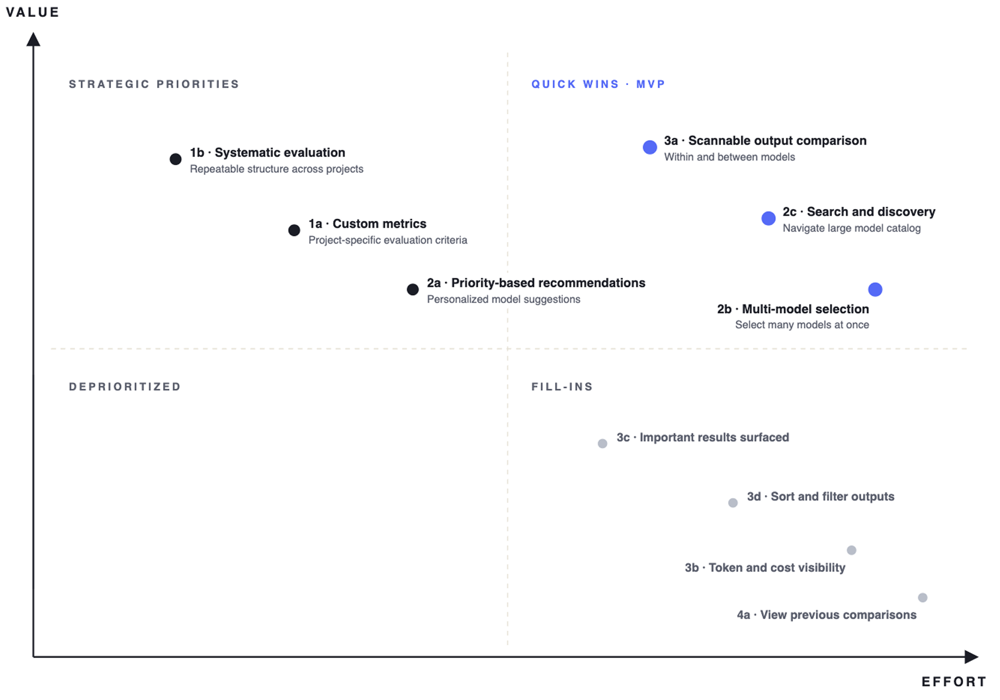
Design Variations
From here, we moved on to brainstorming designs for a system that fit users' goals, alleviated pain points, and fit seamlessly into their workflows determined by preference testing.
Initial Sketches
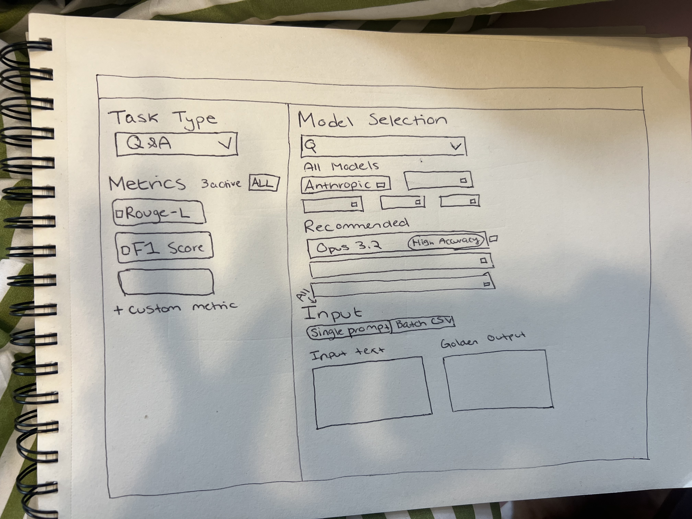
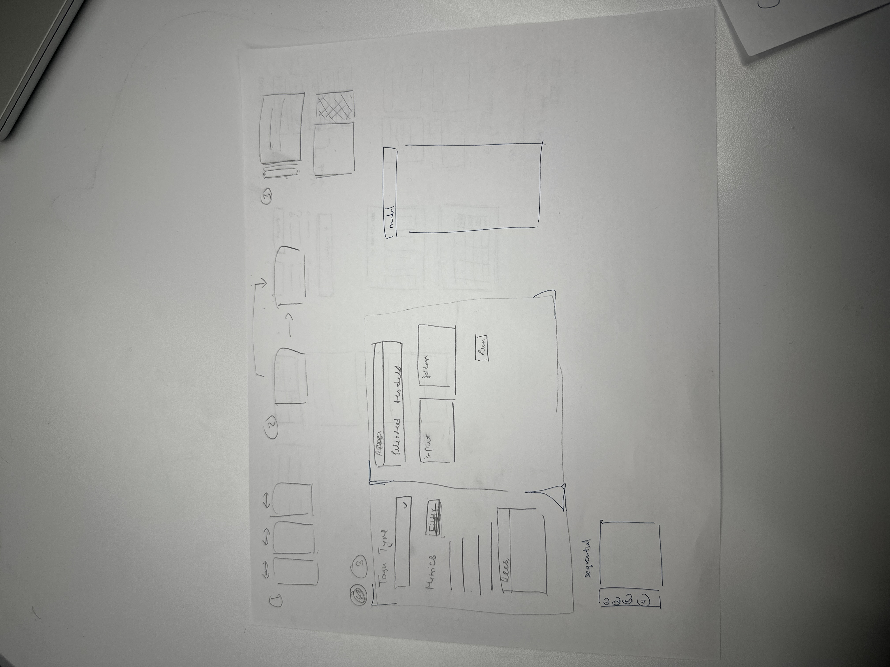
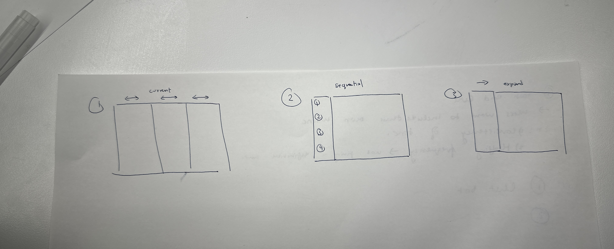
Set Up Variations
Sequential Layout
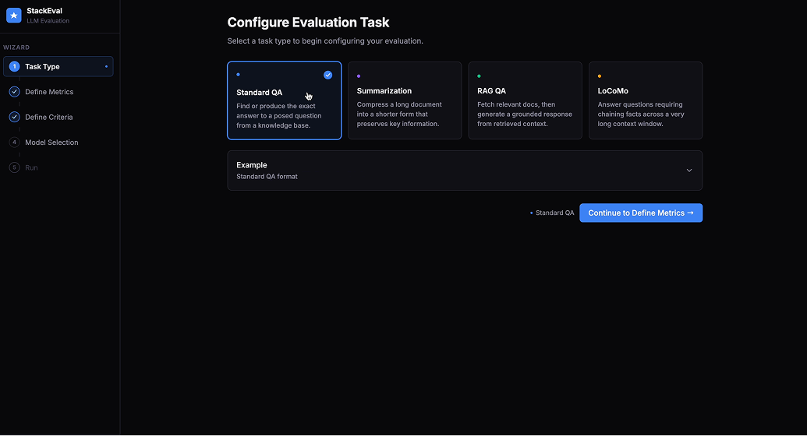
Pop-out Modals
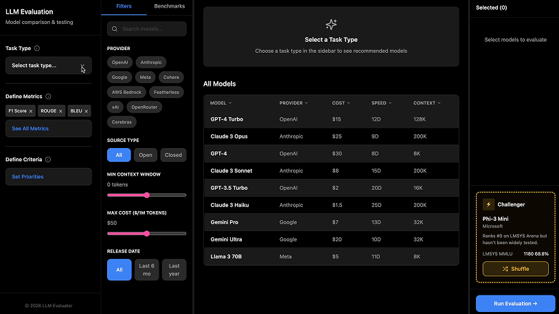
Participants valued its step-by-step structure, reduced clutter, and simplified navigation of complex information. The sidebar layout tended to feel overwhelming, with important interactions getting lost in the interface. A notable nuance emerged: a subset of participants identified Layout A as easier to understand while still selecting Layout B as the one they would prefer to use, suggesting that experienced users valued the efficiency of having everything on one page despite the clarity advantage of sequential steps. This feedback led us to implement default settings for each step so expert users could pass through quickly, and opened broader conversations about saving configurations and creating presets.
Output Variations
Sequential Layout
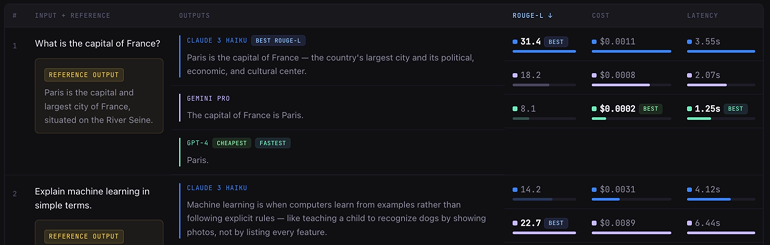
Row-Focused Layout
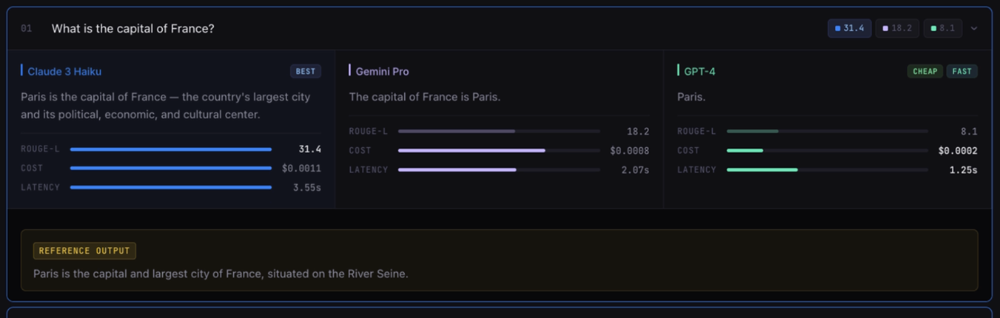
Synchronized Grid
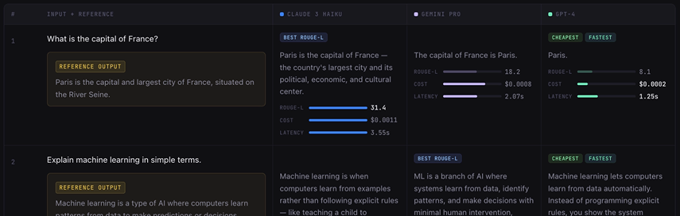
Participants found the side-by-side comparison of Layouts B and C more intuitive than vertical scanning, and specifically valued Layout B's filters and expandable rows for managing information density. The emphasis on clarity stemmed from the use of gestalt grouping principles and left-to-right readability.
Usability Testing
With the sequential setup and row-focused output layouts selected, we built a high-fidelity interactive prototype and conducted moderated usability testing with six participants. All had established experience with LLM evaluation, including use of industry tools like LangChain and custom evaluation frameworks.
Protocol and Analysis
- Two core tasks mirroring preference testing: evaluation set-up and evaluation output. Participants were first given a scenario to set up the context behind their task.
- Participants were asked to set up their evaluation and select 3 models to compare.
- Follow-up questions after both tasks gauged confidence levels, expectations, frustrations, and what was most useful about the platform.
- Live note-taking completed through a rainbow spreadsheet to capture overall actions and patterns, with direct quotations and observations logged separately.
- The rainbow spreadsheet acted as the foundation for qualitative thematic analysis, visualizing patterns across participants and informing top-down analysis of the affinity map.
Recruitment and Screening
- Participants were recruited through professional networks and the University of Michigan PhD candidate network.
- All participants had established, hands-on experience with LLM evaluation tools and workflows.
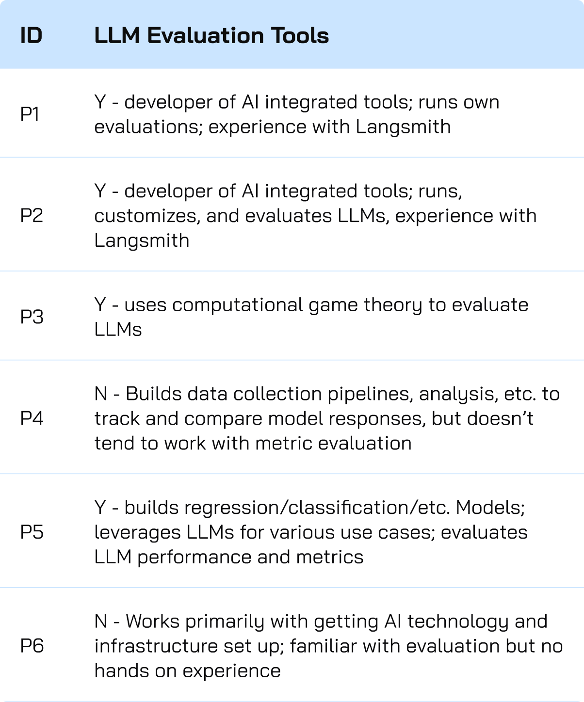
Usability Testing Findings
Four core themes emerged from moderated sessions with six practitioners across technical skill levels.
Evaluation configuration needs more context and customization.
Users wanted more than preset metrics. Most participants with LLM evaluation experience identified LLM-as-a-judge as the most important metric, while others dismissed irrelevant options like BLEU. Many also called for a system prompt field to give models sufficient task context.
Added a system prompt field with AI-assisted draft generation, moved custom evaluators above preset metrics, and integrated an AI copilot for metric selection support.
Criteria definition was disconnected from model recommendations.
Ranking criteria on one page and surfacing recommendations on the next made the cause-and-effect relationship invisible. Five of six participants were confused by the criteria section, and four never noticed the recommendations at all.
Merged criteria and recommendations onto one page, with live-updating model suggestions driven by filters in a left panel.
The challenger model confused users in selection but proved valuable in results.
The challenger card went unnoticed during model selection, but every participant engaged with it during output evaluation, with one genuinely reconsidering their choice after seeing its performance. Users won't add unfamiliar models voluntarily, but will seriously consider them when results speak for themselves.
Moved the challenger to the evaluation summary page as a dismissible toggle, with a plain-language explanation and a note that it runs at no cost. Toggling it off grays it out rather than removing it.
The output view supported confident decisions across skill levels.
Expert users used metrics to validate decisions already formed through manual review. Less technical users relied on the model leaders section and felt confident citing the system's recommendation. Both groups saw the dashboard as a tool for communicating model decisions to stakeholders.
Added an export feature in CSV, JSON, and text report formats, with refined color and CTA placement to surface the most decision-relevant information.
The Final StackEval Design
The final design implements a four-phase sequential evaluation workflow, validated through preference testing and refined through usability testing. Each phase addresses a distinct decision in the evaluation process, distributing cognitive load across stages while preserving navigability through a persistent step indicator. The prototype is accessible at stackevalt.lovable.app.
Define Task
The entry point for configuring an evaluation run. Users select from four task types — Standard QA, Summarization, RAG QA, and LoCoMo — each with a description and input formatting examples that inform model recommendation logic in later steps. An optional system prompt field lets users provide additional context, driven by usability testing where power users identified its absence as a barrier. A "Generate Draft" button powered by the AI copilot reduces the barrier for users unfamiliar with prompt engineering.
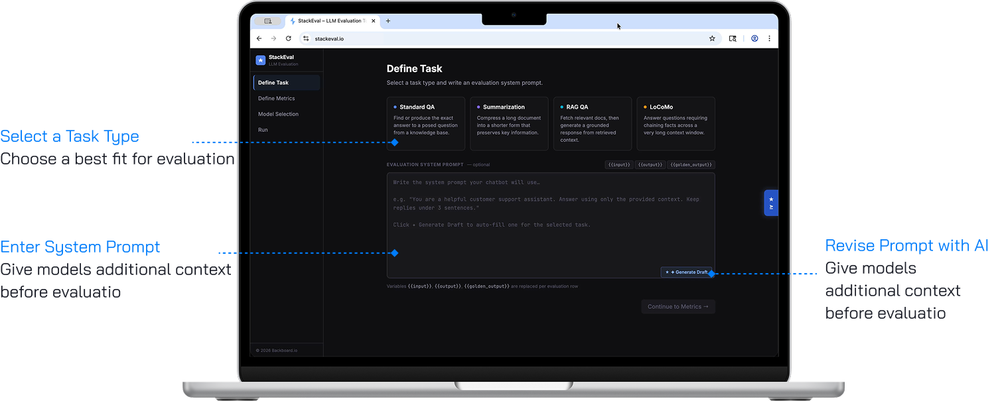
Define Evaluation Metric
Determines how outputs will be scored and compared. Custom evaluators appear first, above preset metrics, reflecting usability test findings where the most experienced participants identified custom evaluation as the most important capability. Ten preset metrics are available with defaults pre-selected, all with tags and descriptions so users can critically assess relevance. This page is skippable, defaulting to the three standard platform metrics.
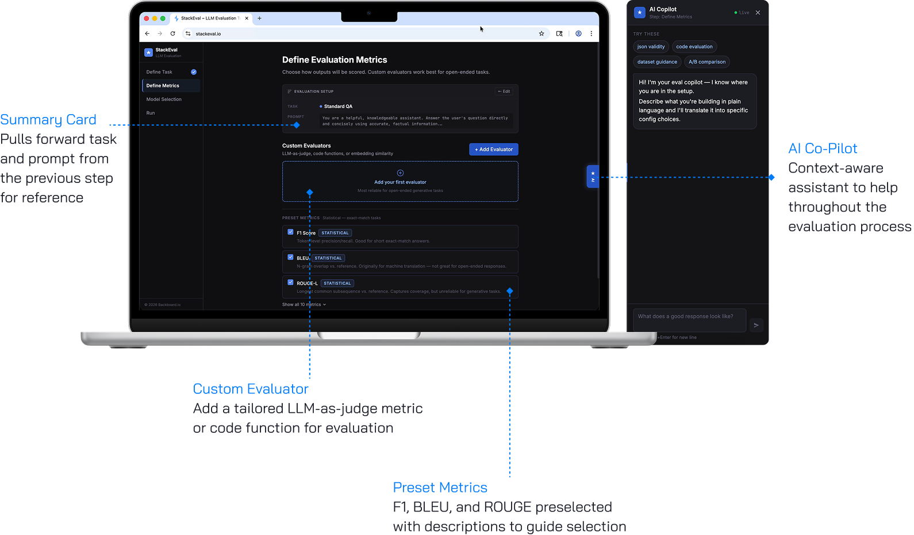
Model Selection
A three-panel layout consolidating criteria definition, model recommendations, and selection into one view. The left panel lets users set accuracy, cost, speed, and context window priorities, producing live updates to a "Recommended for You" list in the center — making the cause-and-effect relationship that was invisible in earlier iterations immediately clear. Additional filters help users navigate 17,000+ models, with selected models populating a persistent right-side panel.
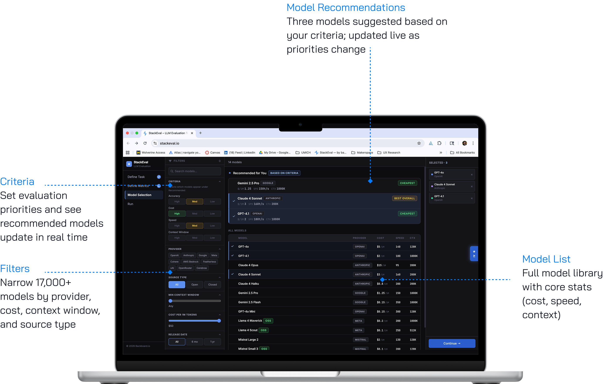
Run Evaluation
Combines input configuration, execution, and output comparison in a single view. A challenger model is introduced with a plain-language explanation and a toggleable option to include it at no cost. Once evaluation completes, a model leaders section surfaces the top performer per metric, followed by a row-by-row collapsible output view. An export button supports CSV, JSON, and text report formats so evaluation knowledge can move beyond a single session and across teams.
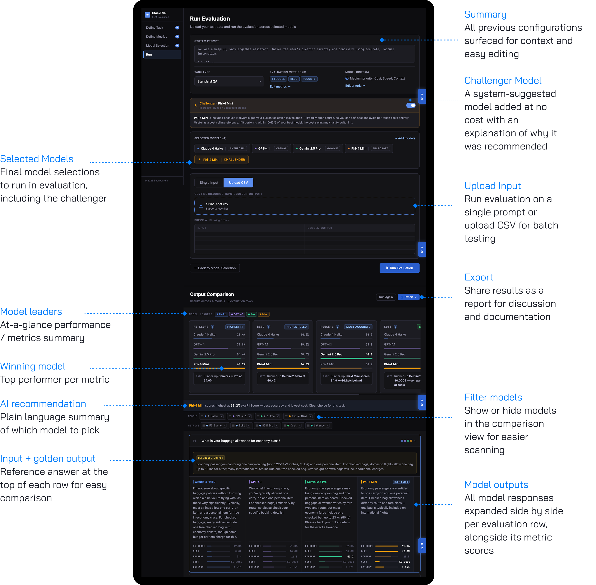
Design System

Realization Plan
Prototype to Product
Our plan is for Backboard.io to launch the StackEval redesign as a beta and track its performance. Key metrics to monitor would include task completion rates across the four-phase flow, custom evaluator adoption, challenger model engagement, model diversity in evaluations, and export usage. These signals indicate whether the new version is delivering on its core intent: externalizing evaluation workflows, surfacing less-familiar models, and making results shareable.
Further Research
Our scope forced us to narrow our focus to technical users, but StackEval's real user base also includes non-technical stakeholders like product managers and stakeholders from other departments. If we had more time, we would have extended the research in the following directions:
Talk to non-technical users to understand how they currently receive evaluation results, what decisions those results inform, and where the handoff breaks down.
A focused round with non-technical participants interpreting results and making a recommendation to running an evaluation based on metrics, to surface which elements of the dashboard land and which need reframing.
Technical Next Steps
The first step is a design handoff sync with Backboard.io's product designer to align components, states, and interactions. Beyond handoff, several features require further implementation research to evaluate technical feasibility before engineering build:
Recommendation engine
The criteria-driven "Recommended for You" panel is currently simulated. Production requires scoping a real scoring pipeline that ranks Backboard.io's 17,000+ model catalog against user-defined priorities like accuracy, cost, speed, and context window, with live updates as criteria shift.
Custom evaluators
LLM-as-Judge, Code/Regex, and Embedding Similarity evaluators require backend infrastructure to execute user-defined logic at scale. This includes model routing for LLM-as-Judge, sandboxed execution for Code/Regex, and pricing and rate-limiting models across all three.
Challenger model and AI Copilot
Both features rely on logic that is deliberately left open in the current design. The challenger model requires Backboard.io to define selection criteria — staff picks, trending models, newest releases, or a hybrid — while the Copilot needs deeper scoping around its interaction model, level of agency, and integration with live user state across the flow.
Reflection
Working on StackEval gave us a clearer sense of how much an evaluation tool's value depends on fitting into the workflows users already have, rather than imposing a new structure on top of them. Across every stage of the project, the strongest insights came watching and learning how developers actually think about model comparison, including the informal habits and mental shortcuts that rarely surface in product requirements. Our role was less about inventing a new evaluation framework and more about making the one that already lives in users' heads visible, shareable, and repeatable. That shift in framing shaped both the final design and the way we approached the work as a team.
What we would do differently
The strongest cross-functional signals came from our two least technical participants, and we only surfaced that in usability testing. Including both audiences from the start would have given us more to work with.
Our sample sizes were small by necessity, but more rounds with more participants would have strengthened the confidence behind our design decisions.
Rather than engaging participants only for testing and evaluation, involving them earlier in brainstorming and ideation would have surfaced ideas shaped directly by their expertise.
Lessons learned
Designing within a technical domain
LLM evaluation can make even experienced practitioners disagree and the landscape shifts faster than most product teams can keep up with. A lot of our initial work was simply learning the domain well enough to ask useful questions, and then making design decisions based on informed assumptions.
Working at pace with real autonomy
The timeline was short and the client was active, which meant we were often making calls before we had complete information. We learned to separate the decisions that needed more research from the ones that just needed a choice, and to keep moving.
Turning limited research into a scalable solution
Five participants give you depth, but depth is easy to mistake for consensus. A lot of our work was pulling back from individual quotes to ask whether a pattern was actually there, or whether we were seeing what we wanted to see.